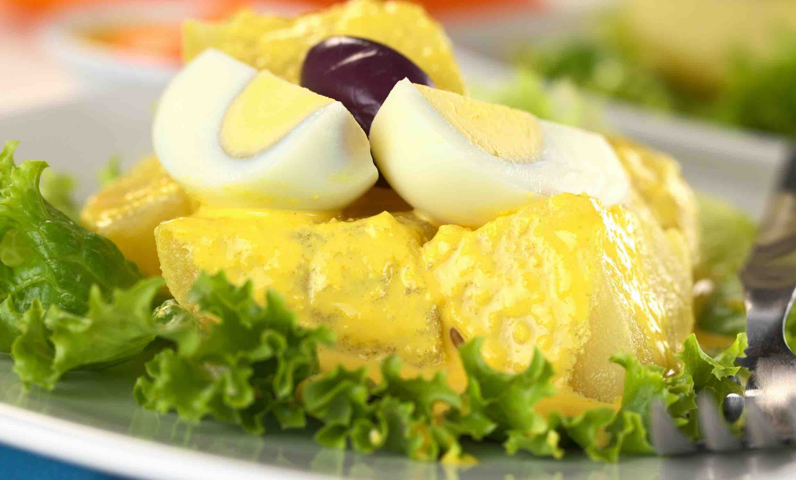
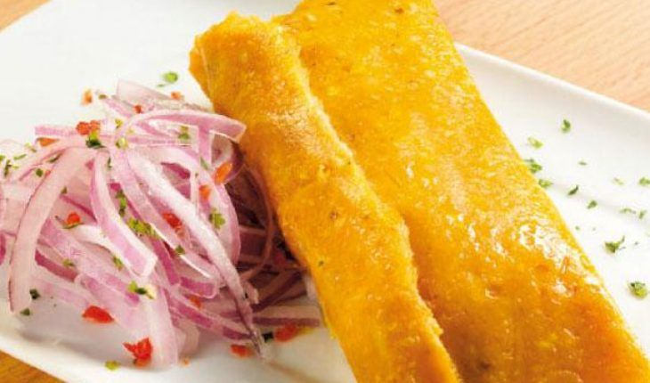
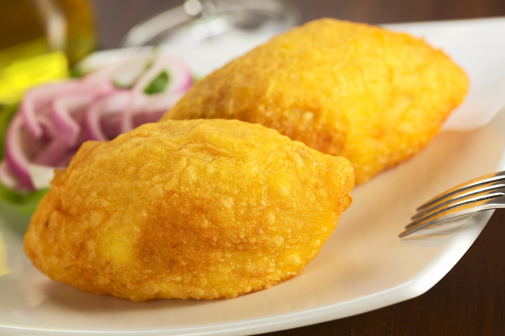
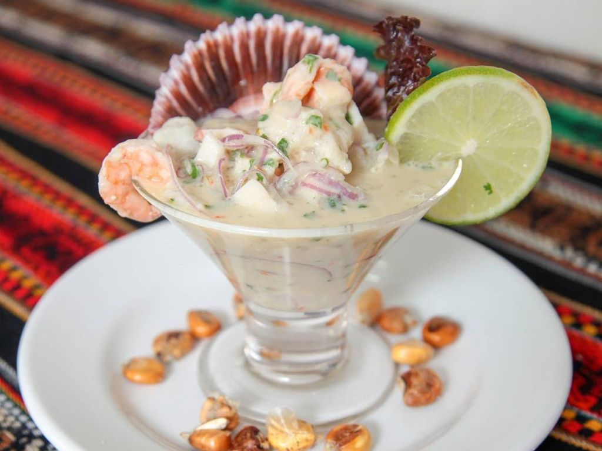
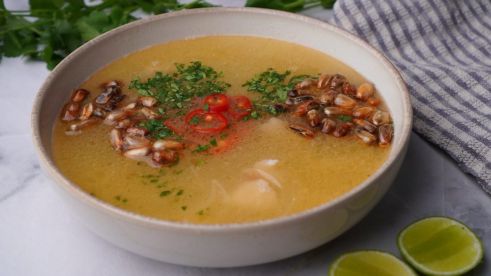
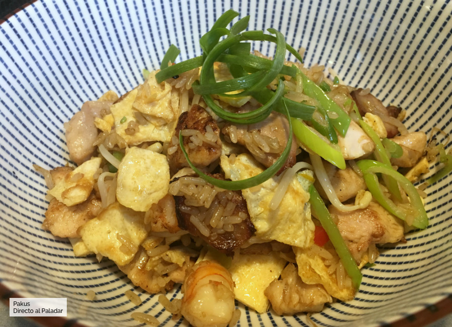
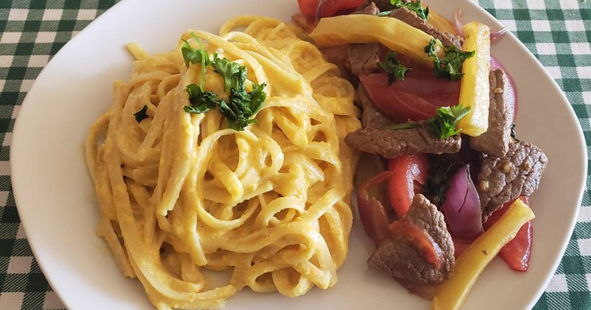
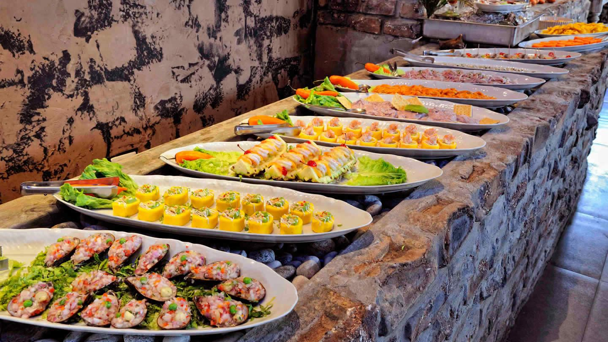
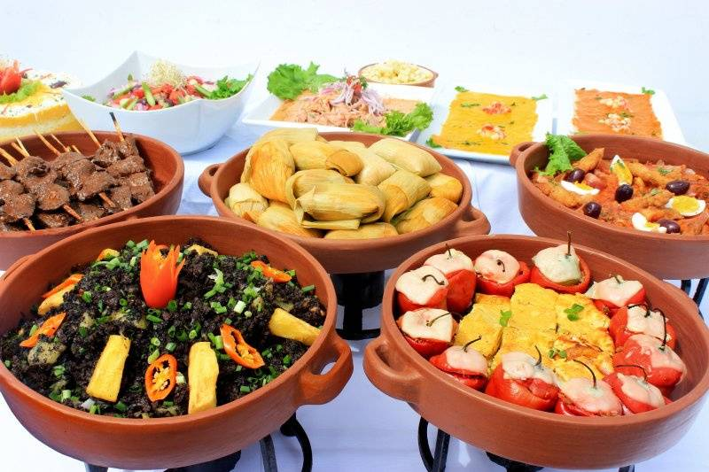

hecha de papa amarillla, ají amarillo, limón, sal al gusto, y puede tener algún relleno como pollo, atún o palta, dependiendo del agrado del comensal.€ 11.00

Papa a la Huancaina
Una sustanciosa porción de papas hervidas y huevo sancochado que, combinada con una particular y suave crema de ají amarillo, deleita al paladar.€ 9.00

Tamales Peruanos
Una masa del maíz molido mezclada con caldo de pollo y/o chancho, manteca y carne de cerdo o de pollo. Es de amplio consumo entre todos los sectores sociales y carácter panperuano.€ 8.50

Papa Rellena Peruana
Consiste en una masa frita de papa cocida, rellena de carne de vacuno, pollo, queso, cebollas, aceitunas, huevos duros, entre otros ingredientes picados.€ 9.50

Leche de Tigre
Es el líquido lechoso que queda después de marinar el pescado crudo: una seductora mezcla de ingredientes como cítricos, ajíes y cebollas que se transforman con el toque del mar.€ 13.00

Chilcano de Pescado
El chilcano es un caldo a base de cabezas y espinos de pescado, típico de la gastronomía del Perú. Se le suele añadir cebolla, ají amarillo, orégano, patatas, perejil, algunos trozos de pescado y zumo de limón.€ 12.50
Menu
Menu del día
Ají de gallina
El ají de gallina es un guiso, una preparación típica de la costa peruana hecha a base de gallina deshilachada, que con frecuencia se sustituye por pollo; cebolla, ajo, almendras o pecanas, leche evaporada, patatas y ají amarillo.€ 14.00
Anticuchos
El anticucho es un tipo de brocheta de origen peruano, que posteriormente se volvió popular en algunos países sudamericanos con diferentes variaciones. Consiste en carne y otros alimentos que se asan ensartados en un pincho.€ 12.50

Arroz chaufa
Se trata de una receta que incluye una mezcla de arroz frito acompañada de verduras, tortilla de huevo y carnes al gusto, y que su principal secreto está en el uso de la técnica oriental del salteado en wok durante la cocción.€ 13.00
Rocoto relleno
Se trata de un plato que es servido tanto como entrante y como segundo, en el que el rocoto se rellena con carne molida (que puede ser de vacuno, de cerdo o una combinación de ambas), aceitunas, guisantes, queso fresco, todo ello aderezado con comino y perejil picado.€ 8.00
Pollo a La Brasa
El pollo asado, rostizado, en brasas o a la brasa es un plato genérico elaborado con un pollo expuesto directamente al fuego en un asador profesional rotatorio, se acompaña de una porción papas fritas y ensalada de verduras, también de una salsa criolla€ 25.00

Lomo saltado con tallarines a la huancaína
este delicioso plato son carne de res, sal, pimienta, comino, cebolla, ajo, ají verde, vinagre tinto o blanco, tomate, perejil, papas y aceite. Esto se acompaña con una porcion de tallarines con sala huancaína, excelente para los amantes de los tallarines.€ 15.00
Buffet
Buffet Del Dia

Contenido
Perfecto para grandes reuniones con amigos o familia. 4 bandejas de anticuchos - dos pollos a la brasa - 3 rocoto rellnos - 4 bebidas a eleccion del cliente.€ 130.00
Buffet
Buffet Noche

Contenido
Ideal para eventos grandes en las noches. 4 cusas rellenas - 4 papas relleans peruanas - 4 papas a la huancáina - 6 tamales peruanos a eleccion del cliente - 3 bebidas a eleccion del cliente€ 120.00

.jpg)
.jpg)